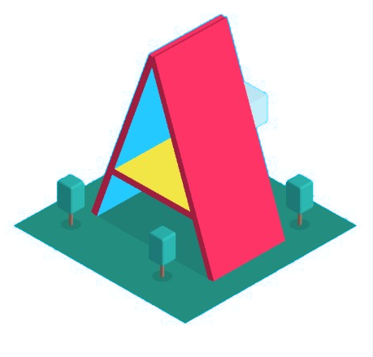
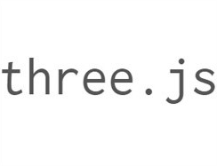

Javascript 3D Experiments
IMPORTANT
POINTER LOCK:
If this is ON your cursor will disappear and the window will have control of your mouse. Press ESC to have free control of your mouse again.FLY:
If this is ON you will not be locked on the ground plane, so while holding W or the UP arrow, you will move directly to the middle of the screen even if that's above or below the map!Links to gitHub >
1
Staircases and Collision

Made using A-Frame
Working with custom models, collision and staircases/ buildings. The motivation largely being to stop errors such as falling through the map from occuring
3D Models Viewer
< See code for this particular lesson
2
Learn with light
< See code for this particular lesson
3
Three.js Experiment
Made using three js
Brief attempt to implement the text plane idea in three js to see if frame rate could be improved. Another benefit is to work with a less abstract library. Much of A-Frame is selecting elements from the DOM, accessing their attributes, and finally modifying the returned variable state
< See code for this particular lesson
4
Panes Concept

Made using A-Frame
Brief layout/ proof of concept for communicating the idea to others as well as for my owen visualization of the idea
< See code for this particular lesson
5
Extruded Text
Made using A-Frame
Also using: aframe-text-geometry-component by Kevin Ngo
An ultimately unsuccessful attempt at 3D text visualization. Unsuccessful because the memory limitations of a browser seem to disallow so many faces. This results in low frames per second
< See code for this particular lesson
6
Experimental Hub
< See code for this particular lesson
7
Main Text Panes

Made using A-Frame
A more comprehensive attempt at the text panes idea, with controls for scaling, rotating and positioning the panes. User is able to enter their text on the left and import it into the 3D scene. Line shooting ability implemented but unstable, potentially due to infrequent DOM updating or maybe a problem with the implementation of raycasting in this project
< See code for this particular lesson